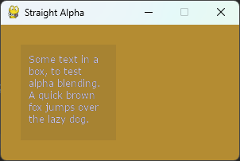
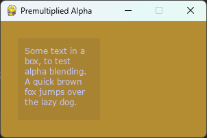

What is Premultiplied Alpha?¶
- Author:
Dan Lawrence
- Contact:
Introduction to Alpha Composition¶
Alpha composition is the process by which we combine one or more semi-transparent images into a final non-transparent image for display. In pygame-ce these images are called Surfaces so I'll use that terminology going forwards.
The simplest example of an alpha composition is when we create a Surface, fill it with a color that has an alpha channel, and then blit that surface direct to our display surface. For example:
1 import pygame
2 from pygame import SRCALPHA, QUIT
3
4 pygame.init()
5
6 pygame.display.set_caption("Basic Composition")
7 display_surf = pygame.display.set_mode((300, 170))
8
9 # create a Surface with the SRCALPHA flag to add an extra channel of data
10 # to each pixel that indicates how transparent it should be (from 0 - fully
11 # transparent, to 255 - fully opaque.
12 basic_surf = pygame.Surface((120, 120), flags=SRCALPHA)
13 # the fourth number here sets the alpha to 25 (almost fully see through)
14 basic_surf.fill((50, 50, 50, 25))
15
16 running = True
17
18 while running:
19 for event in pygame.event.get():
20 if event.type == QUIT:
21 running = False
22
23 display_surf.fill((180, 140, 50))
24
25 display_surf.blit(basic_surf, (25, 25))
26
27 pygame.display.flip()
This kind of alpha composition uses the 'Straight Alpha' formula:
result = (source.RGB * source.A) + (destination.RGB * (1 - source.A))
In this formula our 'basic_surf' from the example code above would be the source, and our 'display_surf' would be the destination.
The main advantage of this kind of alpha compositing is the independence of all the channels from one another and the simplicity of its use. There is no setup required and most image editing programs will export alpha in this way as a separate channel. This is why it is the default composition method in pygame-ce.
How to use Premultiplied Alpha blending¶
Premultiplied alpha blending uses a slightly different formula to compose two surfaces
result = source.RGB + (destination.RGB * (1 - source.A))
As you can see there is one less multiplication in there - this is because, as is implied by the name, in a premultiplied alpha composition all the pixels colors have already been multiplied by their alpha channel value.
We can rewrite the example above to use premultiplied alpha:
1 import pygame
2 from pygame import SRCALPHA, BLEND_PREMULTIPLIED, QUIT
3
4 pygame.init()
5
6 pygame.display.set_caption("Basic Composition")
7 display_surf = pygame.display.set_mode((300, 170))
8
9 basic_surf = pygame.Surface((120, 120), flags=SRCALPHA)
10 basic_surf.fill((50, 50, 50, 25))
11 basic_surf = basic_surf.premul_alpha()
12
13 running = True
14
15 while running:
16 for event in pygame.event.get():
17 if event.type == QUIT:
18 running = False
19
20 display_surf.fill((180, 140, 50))
21
22 display_surf.blit(basic_surf, (25, 25),
23 special_flags=BLEND_PREMULTIPLIED)
24
25 pygame.display.flip()
There are two main changes here. First setting the blend mode in the blit from the default blending algorithm, which uses the straight alpha formula, to BLEND_PREMULTIPLIED. Second, we use the premul_alpha() method on our alpha surface to return a Surface where the color channels have been multiplied by the alpha.
Using premul_alpha() is just one way to get a premultiplied Surface, some image editing programs will allow you to export images in a premultiplied alpha format, or you could manually convert an image's alpha channel to a grayscale layer and multiply that with your image before your final export.
If you run the two programs above they should produce the exact same result.
Why would you use premultiplied alpha?¶
So far premultiplied alpha probably just seems like extra steps to get the same result. Why would you want to use it over straight alpha?
There are two main reasons - and the first is performance. As you saw in the two formulas above, there is one less mathematical operation to do at composition time with premultiplied alpha. Assuming you are not adjusting your alpha in real-time - and in most game development usages you won't be, that is one less operation to do per pixel which means, that on average your premultiplied alpha blits will be a little bit faster than your straight alpha blits.
The second reason is a little more complicated to demonstrate so I've prepared a program to demonstrate the issue. Essentially the straight alpha formula has issues when blending together two surfaces that both contain alpha pixels, and the impact of this can vary from not noticeable at all to looking very messy. Here is the example program for straight alpha:
1 import pygame
2
3 pygame.init()
4
5 pygame.display.set_caption("Straight Alpha")
6 display_surf = pygame.display.set_mode((300, 170))
7
8 text_font = pygame.font.Font("fonts/verdana.ttf", size=12)
9
10 tool_tip_text = text_font.render(
11 "Some text in a box, to test alpha blending. "
12 "A quick brown fox jumps over the lazy dog.",
13 True,
14 (200, 200, 250),
15 wraplength=100,
16 ).convert_alpha()
17
18 tool_tip_surf = pygame.Surface((120, 120), flags=pygame.SRCALPHA)
19 tool_tip_surf.fill((50, 50, 50, 25))
20
21 tool_tip_surf.blit(tool_tip_text, (10, 10))
22
23 running = True
24
25 while running:
26 for event in pygame.event.get():
27 if event.type == pygame.QUIT:
28 running = False
29
30 display_surf.fill((180, 140, 50))
31
32 display_surf.blit(tool_tip_surf, (25, 25))
33
34 pygame.display.flip()
This example approximates the sort of code you might use to add a semi-transparent 'tool-tip' pop up box in a pygame-ce application. You may need to change the path to the verdana font, copy it into a 'fonts/' subdirectory or use an alternative font. The issue is visible on all fonts but more obvious on some fonts than others depending on how much they rely on alpha pixels for visibility. If you run this program you will get a result that looks like this:

Which, to my eyes, makes the text difficult to read and something of a strain on the eyes.
If we rewrite the example to use premultiplied alpha composition instead:
1 import pygame
2
3 pygame.init()
4
5 pygame.display.set_caption("Premultiplied Alpha")
6 display_surf = pygame.display.set_mode((300, 170))
7
8 text_font = pygame.font.Font("fonts/verdana.ttf", size=12)
9
10 tool_tip_text = text_font.render(
11 "Some text in a box, to test alpha blending. "
12 "A quick brown fox jumps over the lazy dog.",
13 True,
14 (200, 200, 250),
15 wraplength=100,
16 ).convert_alpha()
17 tool_tip_text = tool_tip_text.premul_alpha()
18
19 tool_tip_surf = pygame.Surface((120, 120), flags=pygame.SRCALPHA)
20 tool_tip_surf.fill((50, 50, 50, 25))
21 tool_tip_surf = tool_tip_surf.premul_alpha()
22
23 tool_tip_surf.blit(tool_tip_text, (10, 10),
24 special_flags=pygame.BLEND_PREMULTIPLIED)
25
26 running = True
27
28 while running:
29 for event in pygame.event.get():
30 if event.type == pygame.QUIT:
31 running = False
32
33 display_surf.fill((180, 140, 50))
34
35 display_surf.blit(tool_tip_surf, (25, 25),
36 special_flags=pygame.BLEND_PREMULTIPLIED)
37
38 pygame.display.flip()
You then get a result that looks like this:

Which is a lot easier to read.
Why does this happen? Essentially it is because in the Straight Alpha formula the combined pixels colors are losing the influence of the alpha information for the destination surface's pixels. If you scroll back up to the formula for Straight Alpha you will notice that destination alpha doesn't appear anywhere in it. In the example, the destination alpha should reduce the influence of the black tool tip box background color on the final pixels by a large amount, but in the straight alpha version it doesn't so we get a lot of extra black blended into the alpha edges of our light blue text.
In the premultiplied alpha formula all the color channels of both surfaces are already multiplied by their alpha channel - so we don't lose any information during the composition formula and the end result looks more like what we would expect.
---
And that is about all you need to know about alpha compositing and the differences between straight alpha and premultiplied alpha. If you do want to learn more, then wikipedia has a nice long article for further reading.
Edit on GitHub